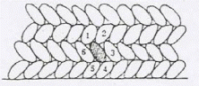
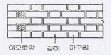

조경기능사 (2010-10-03 기출문제)
1과목: 조경일반
1. 다음 중 무리지어 나는 철새, 설경 또는 수면에 투영된 영상 등에서 느껴지는 경관은?
- 초점경관
- 관개경관
- 세부경관
- 일시경관
(정답률: 91%)

2. 다음 중 사군자(四君子)에 해당되지 않는 것은?
- 매화
- 난초
- 국화
- 소나무
(정답률: 80%)
3. 조선시대 사대부나 양반 계급에 속했던 사람들이 시골 별서에 꾸민 정원의 유적이 아닌 것은?
- 양산보의 소쇄원
- 윤선도의 부용동원림
- 정약용의 다산정원
- 퇴계 이황의 도산서원
(정답률: 85%)
4. 백제 무왕 35년(634년경)에 만들어진 조경 유적은?
- 안압지
- 포석정
- 궁남지
- 안학궁
(정답률: 83%)
5. 인도 정원에 해당하는 것은?
- 알함브라(Alhambra)
- 보르비콩트(Vaux-le-viconte)
- 베르사이유(Versailles)궁원
- 타지마할(Taj-mahal)
(정답률: 89%)
6. 르네상스 문화와 더불어 최초로 노단건축식 정원이 발달한 곳은?
- 로마
- 피렌체
- 아테네
- 폼페이
(정답률: 65%)
7. 자연식 조경 중 물을 전혀 사용하지 않고 나무, 바위와 왕모래 등으로 상징적인 정원을 만드는 양식은?
- 전원 풍경식
- 회유 임천식
- 고산수식
- 중정식
(정답률: 92%)
8. 다음 조경의 대상 중 자연적 환경요소가 가장 빈약한 곳은?
- 도시조경
- 명승지, 천연기념물
- 도립공원
- 국립공원
(정답률: 88%)
9. 조경시 기본계획을 수립하는데 가장 기초로 이용되는 도면은?
- 조감도
- 입면도
- 현황도
- 상세도
(정답률: 68%)
10. 정숙한 장소로서 장래 시가화가 예상되지 않는 자연녹시 지역에 10만제곱미터 규모 이상 설치할 수 있는 기준을 적용하는 도시의 주제공원은? (단, 도시공원 및 녹지 등에 관한 법률 시행규칙을 적용한다.)
- 어린이공원
- 체육공원
- 묘지공원
- 도보권 근린공원
(정답률: 79%)
11. '조경가'에 관한 설명으로 부적합한 것은?
- 조경가와 건축가의 작업은 많은 유사성이 있다.
- 정원사와 같은 개념이다.
- 미국의 옴스테드가 처음으로 용어를 사용했다.
- 경관을 조성하는 전문가이다
(정답률: 85%)
12. 인출선에 대한 설명으로 옳지 않은 것은?
- 수목명, 본수, 규격 등을 기입하기 위하여 주로 이용되는 선이다.
- 도면의 내용물 자체에 설명을 기입할 수 없을 때 사용하는 선이다.
- 인출선의 긋는 방향과 기울기는 서로 다르게 하는 것이 효과적이다.
- 인출선은 가는 실선을 사용하며, 한 도면 내에서는 그 굵기와 질은 동일하게 유지한다.
(정답률: 81%)
13. 다음 중 청(靑)나라 때의 대표적인 정원은?
- 원명원 이궁
- 온천궁
- 상림원
- 사자림
(정답률: 83%)
14. 다음 중 플래니미터를 바르게 설명한 것은?
- 설계도상 부정형 지역의 면적 측정시 주로 사용되는 기구이다.
- 수목 흉고직경 측정시 사용되는 기구이다.
- 수목의 높이를 관측하는 기구이다.
- 설계도상의 곡선 길이를 측정하는 기구이다.
(정답률: 67%)
15. 프레드릭 로 옴스테드가 도시 한복판에 근대공원의 면모를 갖추어 만든 최초의 공원은?
- 런던의 하이드 파크
- 뉴욕의 센트럴 파크
- 파리의 테일리 윈
- 런던의 세인트 제임스 파크
(정답률: 94%)
2과목: 조경재료
16. 다음 중 수용성 목재 방부제이지만 성분상의 맹독성 때문에 사용을 금지하고 있는 것은?
- CCA계 방부제
- 크레오소트유
- 콜타르
- 오일스테인
(정답률: 72%)
17. 다음 중 산울타리 및 은폐용 수종으로 적당하지 않은 것은?
- 꽝꽝나무
- 호랑가시나무
- 사철나무
- 눈향나무
(정답률: 72%)
18. 다음 중 양수(陽樹)로만 짝지어진 것은?
- 느티나무, 가죽나무
- 주목, 버즘나무
- 아왜나무, 소나무
- 식나무, 팔손이나무
(정답률: 65%)
19. 다음 각종 재료의 관리에 대한 설명으로 틀린 것은?
- 목재가 갈라진 경우에는 내부를 퍼티로 채우고 샌드페이퍼로 문질러 준 후 페인트로 마무리 칠한다.
- 철재에 녹이 슨 부분은 녹을 제거한 후 2회에 걸쳐 광명단 도료를 칠한다.
- 콘크리트의 균열이 생긴 곳은 유성페인트를 칠한다.
- 철재 시설의 회전부분에 마찰음이 나지 않도록 그리스를 주입한다.
(정답률: 88%)
20. 조경 수목을 이용 목적으로 분류할 때 바르게 짝지어진 것은?
- 방풍용 - 회양목
- 방음용 - 아왜나무
- 산울타리용 - 은행나무
- 가로수용 - 무궁화
(정답률: 78%)
21. 수목과 열매의 색채가 맞게 연결된 것은?
- 사철나무 - 적색계통
- 산딸나무 - 황색계통
- 붉나무 - 검정색계통
- 화살나무 - 청색계통
(정답률: 70%)
22. 수목과 관련된 설명 중 틀린 것은?
- 나무의 줄기가 2개를 쌍간, 여러 갈래는 다간이라고 한다.
- 나무를 다듬어 짐승의 모양이나 어떤 사물의 모양을 만들어 내는 것을 '토피어리'라 한다.
- 염해는 주로 잎의 표면에 붙은 염분이 원형질 분리 현상을 일으킨다.
- 풍경식 정원에선 주로 정형수를 많이 쓴다.
(정답률: 78%)
23. 목재의 강도에 대한 설명으로 옳은 것은? (단, 가력방향은 섬유에 평행하다.)
- 압축강도가 인장강도 보다 크다.
- 인장강도가 압축강도 보다 크다.
- 인장강도와 압축강도가 동일하다.
- 횡강도와 전단강도가 동일하다.
(정답률: 68%)
24. 질감이 거칠어 큰 건물이나 서양식 건물에 가장 잘 어울리는 수종은?
- 철쭉류
- 소나무
- 버즘나무
- 편백
(정답률: 78%)
25. 다음 중 가로수용으로 사용되기 가장 부적합한 수종은?
- 은행나무
- 사스레피나무
- 가중나무
- 플라타너스
(정답률: 68%)
26. 재료가 외력을 받아서 변형을 일으킨 뒤 외력을 제거하면 다시 원형으로 돌아가는 성질은?
- 소성
- 연성
- 탄성
- 강성
(정답률: 86%)
27. 시멘트의 저장방법 중 주의사항에 해당하지 않는 것은?
- 시멘트 창고 설치시 주위에 배수도랑을 두고 누수를 방지한다.
- 저장 중 굳은 시멘트로부터 가급적 빠른 시간내에 공사에 사용한다.
- 포대 시멘트는 땅바닥에서 30cm 이상 띄우고 방습 처리한다.
- 시멘트의 온도가 너무 높을 때는 그 온도를 낮추어서 사용해야 한다.
(정답률: 79%)
28. 다음 그림과 같은 돌 쌓기에 가장 적합한 재료는?

- 견치석
- 마름돌
- 잡석
- 호박돌
(정답률: 81%)
29. 크레오소트유를 사용하여 내용년수가 장기간 요구되는 철도 침목에 많이 이용되는 방부법은?
- 가압주입법
- 표면탄화법
- 약제도포법
- 상압주입법
(정답률: 62%)
30. 지피식물로 지표면을 덮을 때 유의할 조건으로 부적합한 것은?
- 지표면을 치밀하게 피복해야 한다.
- 식물체의 키가 높고, 일년생이어야 한다.
- 번식력이 왕성하고, 생장이 비교적 빨라야 한다.
- 관리가 용이하고, 병충해에 잘 견뎌야 한다.
(정답률: 91%)
31. 건조 전 질량이 113kg인 목재를 건조시켜서 100kg이 되었다면 함수율은?
- 0.13%
- 0.30%
- 3.00%
- 13.00%
(정답률: 78%)
32. 조경의 목적을 달성하기 위해 식재되는 조경 수목은 식재지의 위치나 환경 조건 등에 따라 적절히 선택되어지는데 다음 중 조경수목이 갖추어야 할 조건이 아닌 것은?
- 쉽게 옮겨 심을 수 있을 것
- 착근이 잘 되고 생장이 잘 되는 것
- 그 땅의 토질에 잘 적응 할 수 있는 것
- 희귀하여 가치가 있는 것
(정답률: 93%)
33. 다음 중 이식에 대한 적응성이 강하여 이식이 가장 쉬운 수종으로만 짝지어진 것은?
- 소나무, 태산목
- 주목, 섬잣나무
- 사철나무, 쥐똥나무
- 백합나무, 감나무
(정답률: 85%)
34. 다음 중 목련과(科)의 나무가 아닌 것은?
- 태산목
- 튤립나무
- 후박나무
- 함박꽃나무
(정답률: 49%)
35. 구근초화로서 봄심기를 하는 초화는?
- 맨드라미
- 봉선화
- 달리아
- 매리골드
(정답률: 62%)
3과목: 조경 시공 및 관리
36. 다음 중 루비깍지벌레의 구제에 가장 효과적인 농약은?
- 메피?클로라이드액제(나왕)
- 트리아디메폰수화제(바리톤)
- 트리클로르폰수화제(디프록스)
- 메티다티온유제(수프라사이드)
(정답률: 60%)
37. 동일 면적에서 가장 많은 주차 대수를 설계할 수 있는 주차방식은?
- 직각주차방식
- 30˚ 주차방식
- 45˚ 주차방식
- 60˚ 주차방식
(정답률: 81%)
38. 다음 중 보행에 큰 어려움을 느낄 수 있는 지형에서 약 얼마의 경사도를 넘을 때 계단을 설치해야 하는가?
- 3%
- 5%
- 8%
- 18%
(정답률: 57%)
39. 다음 중 소형 고압 블록포장의 시공방법이 아닌 것은?
- 보도의 가장 자리는 보통 경계석을 설치하여 형태를 규정짓는다.
- 기존 지반을 잘 다진 후 모래를 3 ~ 5cm 정도 깔고 보도블럭을 포장한다.
- 일반적으로 원로의 종단 기울기가 5% 이상인 구간의 포장은 미끄럼방지를 위하여 거친면으로 마감한다.
- 보도블록의 최종 높이는 경계석의 높이보다 약간 높게 설치한다.
(정답률: 78%)
40. 침염수류와 상록활엽수류의 가장 일반적인 이식 적기는?
- 이른 봄
- 초여름
- 늦은 여름
- 겨울철 엄동기
(정답률: 77%)
41. 디딤돌(징검돌) 놓기에 대한 설명으로 옳지 못한 것은?
- 디딤돌로 사용되는 자연석은 윗면이 편평한 것으로 석질이 단단하여 쉽게 마멸되지 않아야 한다.
- 정원에서 디딤돌의 크기가 30~40cm 인 경우에는 디딤돌의 상면이 지표면보다 3cm 정도 높게 배치한다.
- 디딤돌 놓는 방향은 걸어가는 방향으로 디딤돌의 넓은 방향이 되도록 하고 지면보다 낮게 한다.
- 공원에서 징검돌의 상단은 수면보다 15cm 정도 높게 배치하고, 한 면의 길이가 30~60cm 정도로 되게 한다.
(정답률: 86%)
42. 수목을 목적에 알맞은 수형으로 만들기 위해 나무의 일부분을 잘라주는 것을 무엇이라 하는가?
- 근접
- 전정
- 갱신을 위한 전정
- 순지르기
(정답률: 89%)
43. 중앙에 큰 맹암거를 중심으로 하여 작은 맹암거를 좌우에 어긋나게 설치하는 방법으로 평탄한 지역에 가장 적합한 형태로 설치되고 있는 맹암거 배치 형태는?
- 어골형
- 빗살형
- 부채살형
- 자유형
(정답률: 86%)
44. 다음 평판 측량 방법과 관계가 없는 것은?
- 방사법
- 전진법
- 좌표법
- 교회법
(정답률: 54%)
45. 축척 1/100도면에 0.6m × 50m의 녹지면적을 H0.5 × W0.3 규격의 수목으로 수관의 중복없이 식재할 경우 약 몇 주가 필요한가?
- 225조
- 334주
- 520주
- 750주
(정답률: 60%)
46. 설계도서 중 일위대가표를 작성할 때 일위대가표의 금액란의 금액 단위 표준은?
- 0.01원
- 0.1원
- 1원
- 10원
(정답률: 61%)
47. 다음 중 파이토플라스마에 의한 빗자루병에 잘 걸리는 수종은?
- 소나무
- 대나무
- 오동나무
- 낙엽송
(정답률: 79%)
48. 이용지도의 목적에 따른 분류에 해당되지 않는 것은?
- 공원녹지의 보전
- 안전 · 쾌적 이용
- 적절한 예산의 배정
- 유효이용
(정답률: 72%)
49. 골프장 잔디의 거름주기 요령으로 옳지 않는 것은?
- 한국잔디의 경우에는 보통 5~8월에 집중적인 시비를 실시한다.
- 시비 시기는 잔디에 따라 다르지만 대체적으로 생육량이 늘어가기 시작할 때, 즉 생육이 앞으로 예상 때 비료를 주는 것이 원칙이다.
- 일반적으로 관리가 잘 된 기존 골프장의 경우 질소, 인산, 칼륨의 비율을 5 : 2 : 1 정도로 하여 시비할 것을 권장하고 있다.
- 비배관리시 다른 모든 요소가 충분히 있어도 한 요소가 부족하면 식물생육은 부족한 원소에 지배를 받는다.
(정답률: 64%)
50. 줄기감기를 하는 목적이 아닌 것은?
- 수분 증발을 활성화 시키고자
- 병 · 해충의 침입을 막고자
- 강한 태양 광선으로부터 피해를 방지하고자
- 물리적 힘으로부터 수피의 손상을 방지하고자
(정답률: 75%)
51. KS규격에서 정하는 설계 도면상 표현되는 대상물의 치수를 보여주는 기본단위는 무엇인가?
- 밀리미터(mm)
- 센티미터(츠)
- 미터(m)
- 인치(inch)
(정답률: 80%)
52. 굵은 골재의 최대치수, 잔골재율, 잔골재의 입도, 반죽질기등에 따르는 마무리하기 쉬운 정도를 말하는 굳지 않은 콘크리트의 성질은?
- Workability
- Plasticity
- Consistency
- Finishability
(정답률: 51%)
53. 다음 그림과 같이 쌓는 벽돌 쌓기의 방법은?

- 영국식쌓기
- 프랑스식쌓기
- 영롱쌓기
- 미국식쌓기
(정답률: 45%)
54. 지형도에서 두 지점 사이의 고저차는 20m 이고, 동일한 지형도에서 두 지점 사이의 수평거리는 100m 일 때 경사도(%)는?
- 10%
- 20%
- 50%
- 80%
(정답률: 75%)
55. 농약의 사용시 확인 할 농약 방제 대상별 포장지의 색깔과 구분이 올바른 것은?
- 살균제 - 청색
- 제초제 - 분홍색
- 살충제 - 초록색
- 생장조절제 - 노란색
(정답률: 76%)
56. 다음 중 공원의 산책로 등 자연의 질감을 그대로 유지하면서도 표토층을 보전할 필요가 있는 지역의 포장으로 알맞은 것은?
- 인터록킹 블럭포장
- 판석 포장
- 타일 포장
- 마사토 포장
(정답률: 79%)
57. 수목의 한해(寒害)에 관한 설명 중 옳지 않은 것은?
- 동면(冬眠)에 들어가는 수종들은 특히 한해(寒害)에 약하다.
- 이른 서리는 특히 연약한 가지에 많은 피해를 준다.
- 추위에 의해 나무의 줄기가 껍질이 수선 방향으로 갈라지는 현상을 상렬이라 한다.
- 서리에 의한 피해는 일반적으로 침엽수가 낙엽수보다 강하다.
(정답률: 50%)
58. 다음 흙의 성질 중 점토와 사질토의 비교 설명으로 틀린 것은?
- 투수계수는 사질토가 점토보다 크다.
- 압밀속도는 사질토가 점토보다 빠르다.
- 내부마찰각은 점토가 사질토보다 크다.
- 동결피해는 점토가 사질토보다 크다.
(정답률: 54%)
59. 다음 중 식물체의 생리기능을 돕는 미량원소가 아닌 것은?
- Mn
- Zn
- Fe
- Mg
(정답률: 55%)
60. 도급공사는 공사실시 방식에 따른 분류와 공사비 지불방식에 따른 분류로 구분할 수 있다. 다음 중 공사 실시 방식에 따른 분류에 해당하는 것은?
- 분할도급
- 정액도급
- 단가도급
- 실비청산보수가산도급
(정답률: 71%)